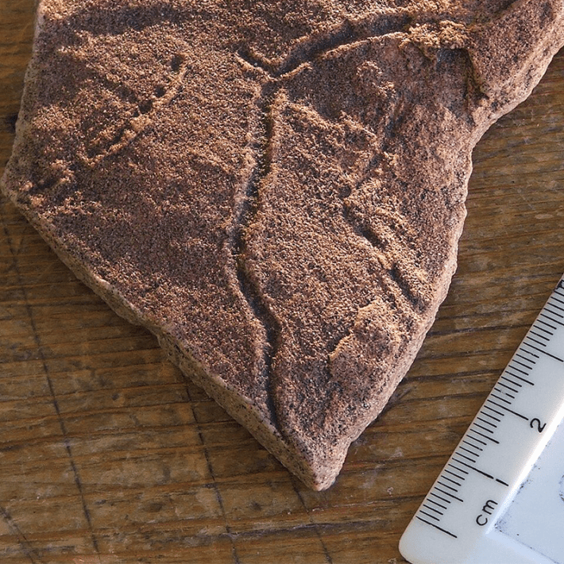

Nearly 560 million years ago during the Ediacaran period, life on Earth was still simple. The multicellular creatures that existed fed on large mats of bacteria on the seafloor and mostly stayed rooted where the food was. At some point, though, that began to change. During the Ediacaran, for the first time in our planet’s history, animals started to move. We know this because they left their fossilized “footprints” in the seabed—meandering trails like a slug might make.

ANCIENT TRACKS: The path of an Ediacaran animal immortalized in a trace fossil. Credit: Verisimilus / Wikimedia Commons.
Unfortunately, while these soft-bodied organisms left traces of their movements, they didn’t leave many hints about their sensory organs. So to find out how they navigated their primordial environment, researchers from London’s National History Museum quantified more than 230 of these trails spanning tens of millions of years and used computer simulations to analyze them. They published their findings in the Proceedings of the National Academy of Sciences today.
Hidden within their looping tracks were clues to just how much of their environment these ancient creatures could detect. Before 546.5 million years ago, they could only sense around two widths of their own body and below—in other words, things they were directly in contact with (or nearby). But between 546.5 million and 539 million years ago they made a quantum leap in sensory range. By the end of the Ediacaran, these life-forms were able to detect things up to eight times their own body length in the distance.
Read more: “Strange Worms Are Taking Their Place on Your Family Tree”
It might seem like only a modest increase, but it had oversized implications. The researchers say this is consistent with Ediacaran life developing rudimentary photoreceptors, allowing them to sense light and dark, and even granting them blurry vision.
Put simply, they were the first organisms to actually catch even the haziest of glimpses of our planet.
According to the researchers, this shift from contact sensing to distant sensing dramatically changed their information environment, setting the stage for more complex neural pathways to emerge. “The Ediacaran expansion of perceptual range can be interpreted as an early prelude to a biological and ecological information revolution,” they wrote. Instead of passively reacting to stimuli in their immediate vicinity, they could now anticipate and more actively forage for food.
It also paved the way for the Cambrian explosion, which birthed a kaleidoscope of animal life occupying diverse niches beyond just the bacterial mats lining the sea floor.
Hey, a little information can go a long way. 
Enjoying Nautilus? Subscribe to our free newsletter.
Lead image: Zekun Wang